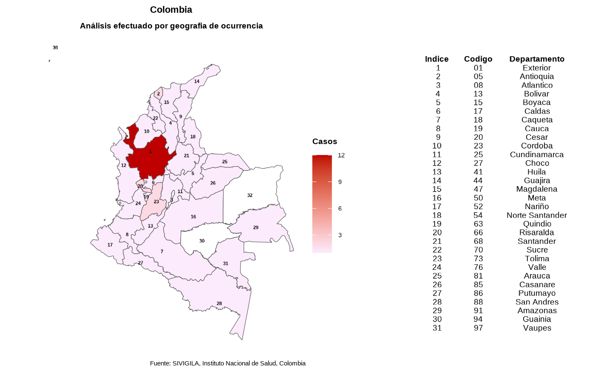

Función que genera el mapa por departamentos o municipios con el número de casos o la incidencia de una enfermedad o evento
Código:R/plotting.R
plot_map.RdFunción que genera el mapa por departamentos o municipios con el número de casos o la incidencia de una enfermedad o evento
Uso
plot_map(
data_agrupada,
col_distribucion = "incidencia",
col_codigos = NULL,
fuente_data = NULL,
dpto = NULL,
mpio = NULL
)Argumentos
- data_agrupada
Un `data.frame` que contiene los datos de la enfermedad agrupados por departamento y número de casos
- col_distribucion
Un `character` (cadena de caracteres) que contiene el nombre de la columna que tiene los valores de la distribución, por número de casos o incidencia; su valor por defecto es `"incidencia"`
- col_codigos
Un `character` (cadena de caracteres) que contiene el nombre de la columna con los códigos de los departamentos o municipios, se utilizan para obtener los poligonos de las áreas geográficas del archivo geoespacial o de figuras (Shapefile); su valor por defecto `NULL`
- fuente_data
Un `character` (cadena de caracteres) que contiene la leyenda o fuente de información de los datos de la enfermedad o evento; su valor por defecto `NULL`
- dpto
Un `character` (cadena de caracteres) que contiene el nombre del departamento; su valor por defecto `NULL`
- mpio
Un `character` (cadena de caracteres) que contiene el nombre del municipio; su valor por defecto `NULL`
Valor
Un `plot` o mapa por departamentos o municipios con el número de casos o incidencia de una enfermedad específica
Ejemplos
data(dengue2020)
data_limpia <- limpiar_data_sivigila(dengue2020)
data_estandar <- estandarizar_geo_cods(data_limpia)
# Mapa por departamentos
data_espacial <- agrupar_dpto(data_event = data_estandar)
plot_map(data_agrupada = data_espacial,
col_distribucion = "casos")

# Mapa por municipios de un departamento especifico
data_filtrada_dpto <- geo_filtro(data_event = data_estandar,
dpto = "Cundinamarca")
data_espacial_dpto <- agrupar_mpio(data_event = data_filtrada_dpto)
plot_map(data_agrupada = data_espacial_dpto,
col_codigos = "cod_mun_o",
col_distribucion = "casos")
 # Mapa por municipio especifico
data_filtrada_mpio <- geo_filtro(data_event = data_estandar,
dpto = "Antioquia",
mpio = "Medellin")
data_espacial_mpio <- agrupar_mpio(data_event = data_filtrada_mpio)
plot_map(data_agrupada = data_espacial_mpio,
col_codigos = "cod_mun_o",
col_distribucion = "casos",
dpto = "Antioquia",
mpio = "Envigado")
# Mapa por municipio especifico
data_filtrada_mpio <- geo_filtro(data_event = data_estandar,
dpto = "Antioquia",
mpio = "Medellin")
data_espacial_mpio <- agrupar_mpio(data_event = data_filtrada_mpio)
plot_map(data_agrupada = data_espacial_mpio,
col_codigos = "cod_mun_o",
col_distribucion = "casos",
dpto = "Antioquia",
mpio = "Envigado")
 # Mapa con la incidencia por municipios de un departamento especifico
if (FALSE) {
incidencia_dpto <-
calcular_incidencia_geo(data_agrupada = data_espacial_dpto)
plot_map(data_agrupada = incidencia_dpto,
col_codigos = "cod_mun_o",
col_distribucion = "incidencia")
}
# Mapa con la incidencia por municipios de un departamento especifico
if (FALSE) {
incidencia_dpto <-
calcular_incidencia_geo(data_agrupada = data_espacial_dpto)
plot_map(data_agrupada = incidencia_dpto,
col_codigos = "cod_mun_o",
col_distribucion = "incidencia")
}